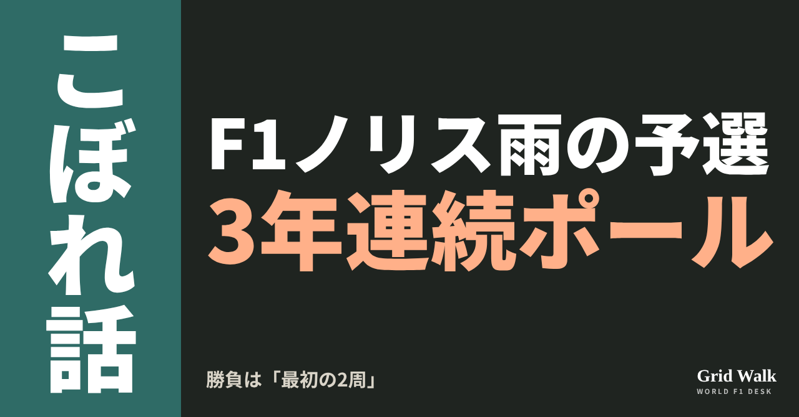
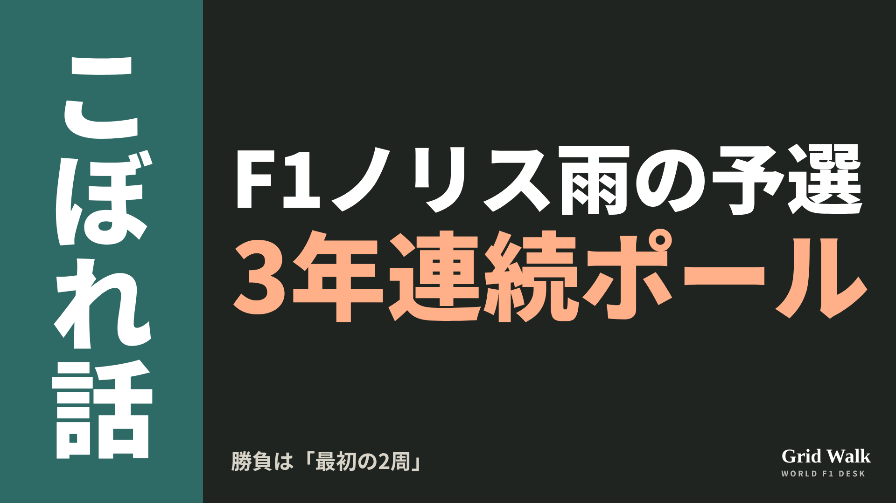
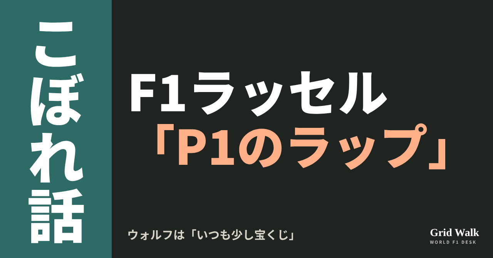
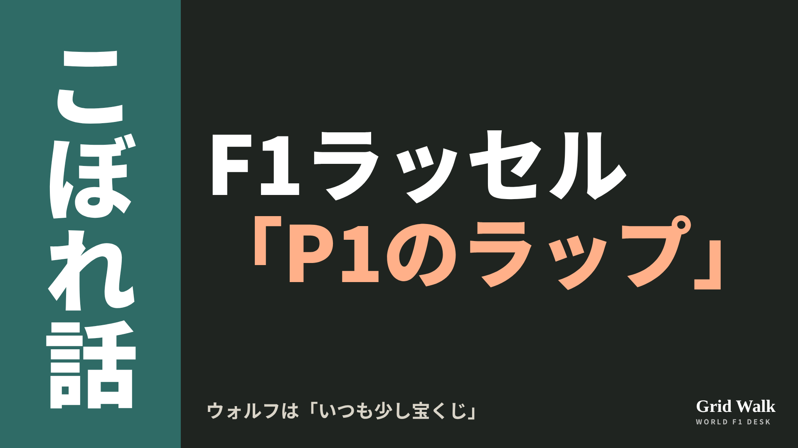
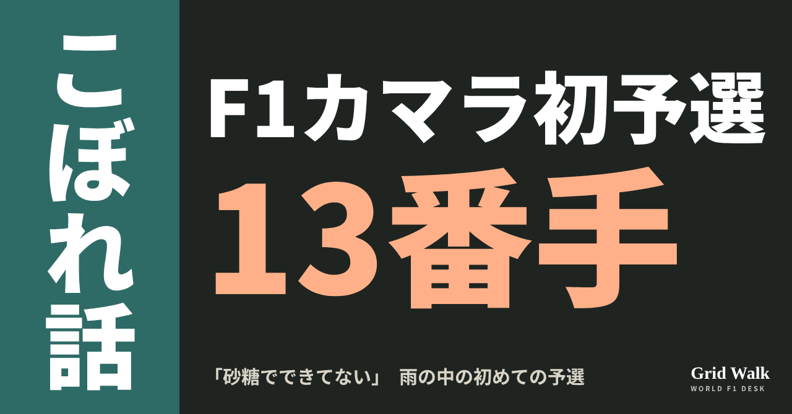
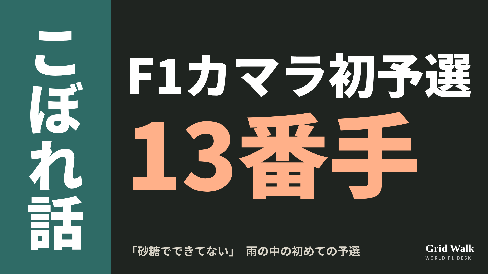
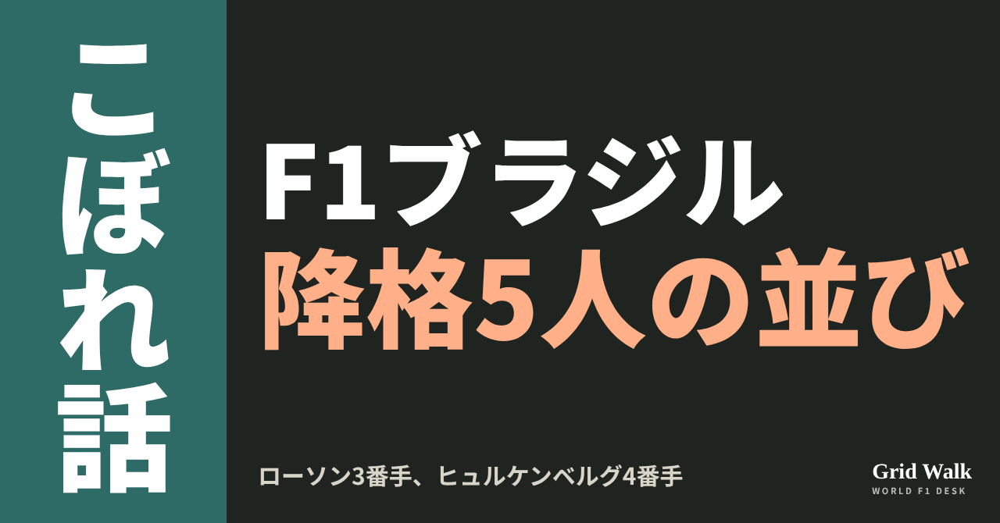
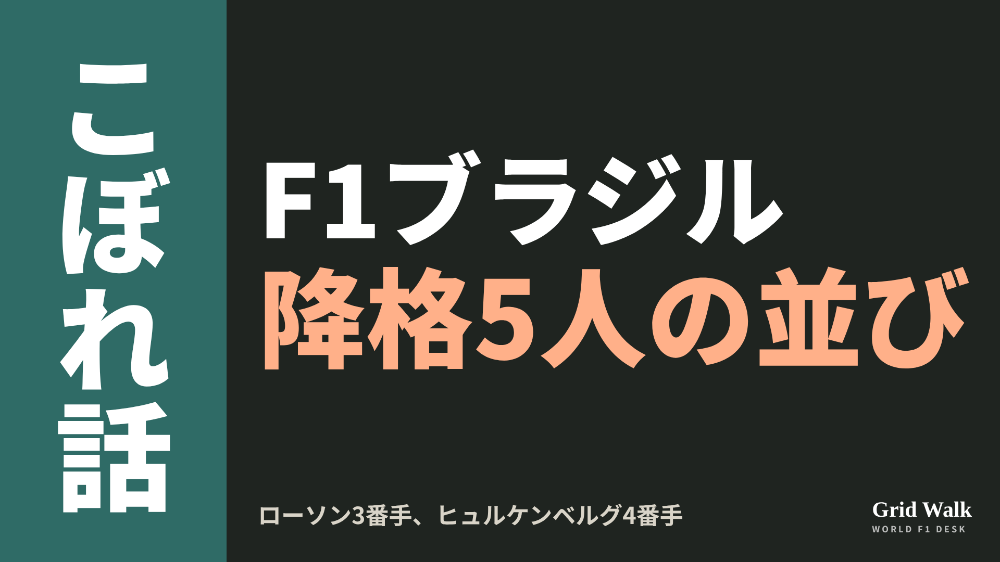
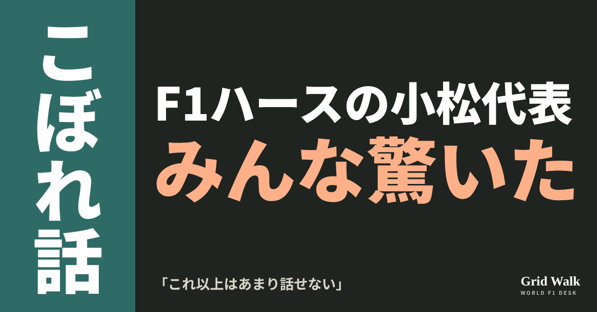
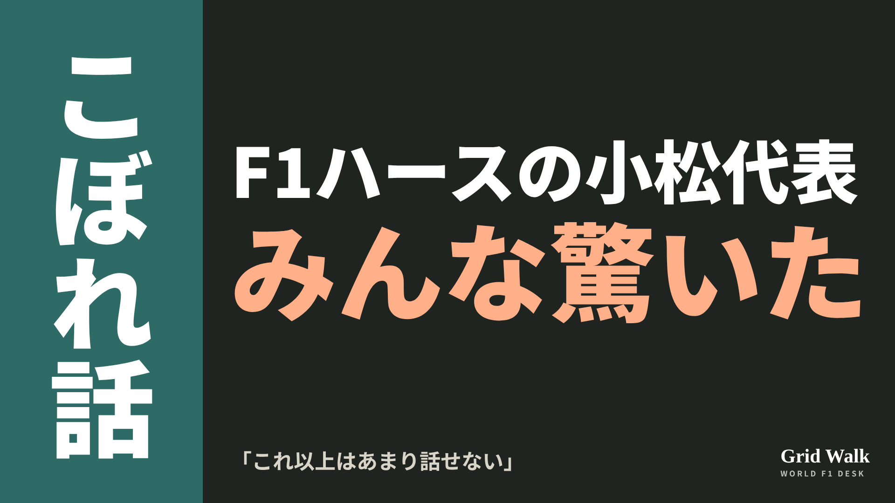

<meta charset="utf-8"><title>11/8朝のコラム note貼り付け</title>
<style>
/* one column of numbered paste steps; text steps vs image steps differ by marker */
:root{--bg:#F5F4F0;--card:#FFFFFF;--ink:#1D2321;--mute:#5F665F;--line:#DCDAD2;--btn:#1F5FBF;--btnok:#2E8B4F;--img:#E9F3EC;--imgink:#22663B;--sans:'IBM Plex Sans JP','Hiragino Sans','Noto Sans JP',sans-serif}
@media (prefers-color-scheme:dark){:root:not([data-theme="light"]){--bg:#171A19;--card:#202423;--ink:#ECEDE8;--mute:#A3AAA2;--line:#343937;--btn:#4D8BE6;--btnok:#3FA866;--img:#1E2C23;--imgink:#8FD3A6;color-scheme:dark}}
:root[data-theme="dark"]{--bg:#171A19;--card:#202423;--ink:#ECEDE8;--mute:#A3AAA2;--line:#343937;--btn:#4D8BE6;--btnok:#3FA866;--img:#1E2C23;--imgink:#8FD3A6;color-scheme:dark}
body{background:var(--bg);color:var(--ink);font-family:var(--sans);font-size:15px;line-height:1.75;padding:20px 16px 60px}
main{max-width:680px;margin:0 auto;display:grid;gap:28px}
header h1{font-size:22px;margin:0 0 6px;text-wrap:balance}
header p{margin:0;color:var(--mute);font-size:14px}
nav{display:flex;gap:8px;flex-wrap:wrap;margin-top:12px}
nav a{border:1px solid var(--line);border-radius:999px;padding:4px 14px;color:var(--ink);text-decoration:none;font-size:14px;background:var(--card)}
.part h2{font-size:18px;line-height:1.5;margin:0 0 12px;text-wrap:balance;display:flex;gap:10px;align-items:baseline;flex-wrap:wrap}
.tag{font-size:13px;background:var(--ink);color:var(--bg);border-radius:6px;padding:1px 9px}
.steps{list-style:none;margin:0;padding:0;display:grid;gap:12px}
.st{background:var(--card);border:1px solid var(--line);border-radius:12px;padding:12px;min-width:0}
.hd{display:flex;align-items:center;gap:8px;margin-bottom:8px}
.no{width:26px;height:26px;border-radius:50%;background:var(--btn);color:#fff;display:inline-flex;align-items:center;justify-content:center;font-size:13px;font-weight:700;flex:0 0 26px}
.im .no{background:var(--btnok)}
.hd em{font-style:normal;font-size:12px;background:var(--img);color:var(--imgink);border-radius:6px;padding:0 8px}
.bx{font-size:13.5px;line-height:1.7;border:1px solid var(--line);border-radius:8px;padding:8px 10px;max-height:110px;overflow:auto;overflow-wrap:anywhere}
.bx.tall{max-height:150px}.bx p{margin:0 0 6px}.bx h2{font-size:14px;margin:8px 0 4px}.bx a{color:var(--btn)}
.st img{display:block;width:100%;max-width:100%;border:1px solid var(--line);border-radius:8px}
.sub{font-size:12.5px;color:var(--mute);margin:6px 0 0}
.cp{width:100%;margin-top:8px;padding:12px;border:0;border-radius:10px;background:var(--btn);color:#fff;font:600 15px var(--sans);cursor:pointer}
.cp.ok{background:var(--btnok)}.cp.dl{background:var(--btnok)}.cp:focus-visible{outline:3px solid var(--ink);outline-offset:2px}
.xh{font-size:15px;margin:20px 0 10px}
.fb{font-size:13px;line-height:1.7;margin:8px 0 0;padding:8px 10px;border-radius:8px;background:var(--img);color:var(--imgink)}
.opts{display:grid;grid-template-columns:repeat(auto-fill,minmax(240px,1fr));gap:10px}
.opt{min-width:0}.opt img{display:block;width:100%;border:1px solid var(--line);border-radius:8px}
.ol{display:flex;align-items:center;gap:8px;margin-top:6px}.ol b{font-size:13px;flex:0 0 auto}.ol .on{font-size:12.5px;color:var(--mute);flex:1;min-width:0}.ol .cp{width:auto;flex:0 0 auto;padding:9px 14px}.ol .cp{margin:0;padding:9px}
.toast{font-size:13px;color:var(--mute);margin-top:6px}
</style>
<main><header><h1>11/8朝のコラム note貼り付け</h1><p>いま公開済みは5本です。青い番号は文章、緑は画像です。</p><nav><a href="#p1">1</a><a href="#p2">2</a><a href="#p3">3</a><a href="#p4">4</a><a href="#p5">5</a></nav></header><section class="part" id="p1"><h2><span class="tag">OFF GRID</span>ノリス、インテルラゴス3年連続ポール　勝負は雨の「最初の2周」</h2><p class="sub">サイトに公開：08:10</p><ol class="steps">
<li class="st im"><div class="hd"><span class="no">1</span><b>見出し画像</b><em>画像</em></div><button class="cp dl" data-img="img/norris-interlagos-pole-20261108.png" data-name="norris-interlagos-pole-20261108_見出し画像.png">ダウンロード</button></li>
<li class="st"><div class="hd"><span class="no">2</span><b>タイトル</b></div><div class="bx" id="p1t">ノリス、インテルラゴス3年連続ポール　勝負は雨の「最初の2周」</div><button class="cp" data-plain="p1t">タイトルをコピー</button></li>
<li class="st"><div class="hd"><span class="no">3</span><b>本文</b></div><div class="bx tall" id="p1r"><p>大雨で1時間以上止まったサンパウロGPの予選で、ポールを取ったのはマクラーレンのランド・ノリスでした。タイムは1分27秒470、2番手のジョージ・ラッセル（メルセデス）とは0.204秒差。インテルラゴスでは2024年から3年連続のポールです。本人いわく、勝負は「最初の2周」でした。</p><p>待ち時間の数え方を比べた各国の記事と、ラッセルの止められたラップの回へのリンクはサイトで → <a href="https://f1gridwalk.github.io/lens/norris-interlagos-pole-20261108/?utm_source=note&amp;utm_campaign=norris-interlagos-pole-20261108">https://f1gridwalk.github.io/lens/norris-interlagos-pole-20261108/?utm_source=note&amp;utm_campaign=norris-interlagos-pole-20261108</a></p><h2>勝負は「最初の2周」</h2><p>F1公式によると、Q1は始まって3分たたないうちに赤旗で止まり、長い中断のあと、フルウエットのタイヤで再開しました。Q3は強い雨の予報が出ていて、序盤の周回が大事になりそうでした。実際、残り7分の時点で、いちばんいい路面の時間はもう過ぎていた、とF1公式は書いています。</p><blockquote><p>「簡単な条件じゃない。この先もっと雨が強くなると分かっているときは特に。最初に2周をまとめて、ミスをしないことが大事で、まさにそのとおりにできた」（ノリス、F1公式／イギリス）</p></blockquote><p>この車でぬれた路面を走るのは、これが初めてだったそうです。</p><blockquote><p>「この車でウエットを走るのは初めてだったけど、何をすべきか、かなり早くつかめたと思う」（ノリス、Speedweek／オーストリア）</p></blockquote><p>2番手のラッセルは、Q3でチームにラップを止められたことに怒っていました（その話は https://f1gridwalk.github.io/lens/russell-aborted-lap-20261108/ で）。</p><h2>新しい部品を持ち込んだのは1チームだけ</h2><p>イギリスのPlanetF1によると、FIAに出された資料では、このサンパウロに改良を持ち込んだのはマクラーレンだけでした。作り直したフロントウイングと、新しいリアウイング、ビームウイング、手を加えたフロアです。金曜の練習のあと、ノリスはこう話していました。</p><blockquote><p>「結局のところ、改良はラップタイムと性能を上げるためのもの。ハンドリングをよくするのが狙いじゃない」「FP1はちょっとした驚き、うれしい驚きだった」（ノリス、RacingNews365／イギリス）</p></blockquote><p>雨の予選で新しい部品がどれだけ効いたかは、この話からは分かりません（改良の中身と各国の伝え方は https://f1gridwalk.github.io/lens/mclaren-interlagos-upgrades-20261105/ で）。</p><h2>3年連続と、止まっていた時間</h2><p>F1公式の予選レポートでは、2024年のポールもノリスで、1分23秒405。雨で日曜の朝にずれ、赤旗が5回出た予選でした。2番手はこのときもラッセルで、差は0.173秒。2025年は1分09秒511で、2番手のアンドレア・キミ・アントネッリとは0.174秒差です。3年とも、差は0.2秒ほどでした。</p><p>今年の中断の長さは、媒体で数字が違います。ブラジルのAutoracingは再開まで82分待ったと書き、Correio Brazilienseは1時間23分の中断と書きました。同じくブラジルのO Tempo（Folhapress）は、15時の予定だった予選の再開を16時26分としていて、予定から数えると1時間26分です。赤旗は始まって3分たたないうちに出たので、予定の時刻から数えるか赤旗から数えるかで、2〜3分変わります。F1公式は「長い遅れ」とだけ書いています。</p><p>決勝は日本時間11月9日午前2時スタートです。</p><p><strong>雨のポール争い、あなたは「最初の2周」に全部をかけるのと、雨がやむのを待つの、どちらを選びますか？</strong></p><p>━━━━━━━━━━</p><p><strong>F1 Grid Walk では、世界のF1ニュースを毎日日本語でまとめています。</strong></p><p>海外の記事の要約を、毎日載せています。</p><p><a href="https://f1gridwalk.github.io/">https://f1gridwalk.github.io/</a></p><p>ほかの海外記事も読みたい方は、F1 Grid Walkへ。</p><p><a href="https://f1gridwalk.github.io/lens/norris-interlagos-pole-20261108/">https://f1gridwalk.github.io/lens/norris-interlagos-pole-20261108/</a></p><p>━━━━━━━━━━</p><p><a href="https://www.formula1.com/en/latest/article/norris-beats-russell-to-pole-position-in-dramatic-rain-affected-sao-paolo-qualifying.2V60rhlQjdS5my1uFrOKUH">出典：Formula 1 公式（イギリス）</a></p><p><a href="https://www.formula1.com/en/results/2026/races/1299/brazil/qualifying">出典：Formula 1 公式（イギリス）</a></p><p><a href="https://www.formula1.com/en/latest/article/norris-beats-russell-and-tsunoda-to-pole-position-in-sao-paulo-amid-five-red.2PERamLqTYyD4M7zI55X0n">出典：Formula 1 公式（イギリス）</a></p><p><a href="https://www.formula1.com/en/latest/article/norris-grabs-pole-position-in-sao-paulo-ahead-of-antonelli-and-leclerc-as.51zXqPIrqvKIKuvCL6CAgp">出典：Formula 1 公式（イギリス）</a></p><p><a href="https://www.speedweek.com/en/a/formula-1/lando-norris-pole-interlagos-realised-quickly">出典：Speedweek（オーストリア）</a></p><p><a href="https://www.planetf1.com/news/mclaren-upgrades-f1-brazilian-gp">出典：PlanetF1（イギリス）</a></p><p><a href="https://racingnews365.com/lando-norris-delivers-verdict-on-latest-mclaren-upgrade-ahead-of-sao-paulo-gp">出典：RacingNews365（イギリス）</a></p><p><a href="https://www.autoracing.com.br/norris-pole-chuva-classificacao-gp-sao-paulo-2026/">出典：Autoracing（ブラジル）</a></p><p><a href="https://www.correiobraziliense.com.br/esportes/2026/11/7534981-norris-conquista-pole-em-interlagos-brasileiros-batem-em-treino-chuvoso.html">出典：Correio Braziliense（ブラジル）</a></p><p><a href="https://www.otempo.com.br/sports/f1/2026/11/7/norris-conquista-a-pole-do-gp-de-sao-paulo-apos-classificacao-marcada-por-chuva-e-batidas">出典：O Tempo（Folhapress）（ブラジル）</a></p></div><button class="cp" data-rich="p1r">本文をコピー</button></li>
<li class="st"><div class="hd"><span class="no">4</span><b>ハッシュタグ</b></div><div class="bx" id="p1h">#F1 #F1jp #ノリス #マクラーレン #ラッセル #サンパウロGP #インテルラゴス #ポールポジション #F1こぼれ話 #OFFGRID</div><button class="cp" data-plain="p1h">タグをコピー</button></li>
</ol><h3 class="xh">X</h3><ol class="steps">
<li class="st im"><div class="hd"><b>X用の画像</b><em>画像</em></div><button class="cp dl" data-img="img/x_norris-interlagos-pole-20261108.png" data-name="x_norris-interlagos-pole-20261108.png">ダウンロード</button></li>
<li class="st"><div class="hd"><b>① noteをシェアするときの文</b></div><div class="bx" id="p1x0">雨で1時間以上止まったサンパウロGPの予選で、ノリスがインテルラゴス3年連続のポール。本人いわく、大事だったのは「最初の2周」でした。noteにまとめました #F1jp #ノリス</div><button class="cp" data-plain="p1x0">コピー</button></li>
<li class="st"><div class="hd"><b>② ①への返信</b></div><div class="bx" id="p1x1">ほかの海外記事も読みたい方は、F1 Grid Walkへ。
https://f1gridwalk.github.io/lens/norris-interlagos-pole-20261108/?utm_source=x&amp;utm_campaign=norris-interlagos-pole-20261108</div><button class="cp" data-plain="p1x1">コピー</button></li>
<li class="st"><div class="hd"><b>③ ②への返信</b></div><div class="bx" id="p1x2">毎日の海外F1ニュースは、日本語でこちらにまとめています。
https://f1gridwalk.github.io/</div><button class="cp" data-plain="p1x2">コピー</button></li>
</ol></section><section class="part" id="p2"><h2><span class="tag">OFF GRID</span>ウォルフ「いつも少し宝くじ」　ラッセルが無線で怒った0.204秒</h2><p class="sub">サイトに公開：08:10</p><ol class="steps">
<li class="st im"><div class="hd"><span class="no">1</span><b>見出し画像</b><em>画像</em></div><button class="cp dl" data-img="img/russell-aborted-lap-20261108.png" data-name="russell-aborted-lap-20261108_見出し画像.png">ダウンロード</button></li>
<li class="st"><div class="hd"><span class="no">2</span><b>タイトル</b></div><div class="bx" id="p2t">ウォルフ「いつも少し宝くじ」　ラッセルが無線で怒った0.204秒</div><button class="cp" data-plain="p2t">タイトルをコピー</button></li>
<li class="st"><div class="hd"><span class="no">3</span><b>本文</b></div><div class="bx tall" id="p2r"><p>サンパウロGPの予選Q3。ジョージ・ラッセルは2周目の速いラップの途中、ウィリアムズのアレクサンダー・アルボンに追いついたところで、チームから「いま引いていい」と言われてそのラップをやめました。次の周でやり直すはずが、雨が強まり更新できず2番手。ランド・ノリスのポールとは0.204秒差です。トト・ウォルフ代表は予選のあと「いつも少し宝くじのようなもの」とチームの判断をかばいました。</p><p>降格の理由を書いたコラムと、3つの元の記事と結果の表へのリンクはサイトで → <a href="https://f1gridwalk.github.io/lens/russell-aborted-lap-20261108/?utm_source=note&amp;utm_campaign=russell-aborted-lap-20261108">https://f1gridwalk.github.io/lens/russell-aborted-lap-20261108/?utm_source=note&amp;utm_campaign=russell-aborted-lap-20261108</a></p><h2>1周だけのはずが、2周</h2><p>英The Raceによると、雨の予選のQ3はインターミディエイト（雨用の中間のタイヤ）で走れる路面でしたが、レーダーでは次の強い雨までに速いラップは1周だけの見込み。実際には2周走れました。</p><p>1周目のあと、一番速いタイムはラッセルでした。2周目で多くのドライバーがタイムを縮め、ノリスが上回りました（The Race、オランダのRacingNews365）。結果の表（F1公式）はノリス1分27秒470、ラッセル1分27秒674。</p><p>The Raceは、また最速になれそうなペースだったラッセルが、アルボンに追いついて引いた、と書いています。一方でRacingNews365は、アルボンは邪魔にならないくらい前にいたが、チームが中断して1周あとにやり直すよう伝えた、としています。</p><h2>「本当に？」のあとに来た雨</h2><p>The Raceが書き起こした無線では、ラッセルはまず「どけ、アルボーノ！」。チームの「もう1周走れる」に、「引くのか行くのか、はっきり言ってくれ」と返します。チームは「いま引いていい」。ラッセルが「本当に？」と聞き返すと、答えは「雨がいま強くなっている」でした。</p><p>最後の周に入ろうとすると、チームは「ピットレーンは強い雨」。ラッセルは汚い言葉まじりに、ラップを最後まで走るべきだった、引けと言ったのはそっちだ、と怒りました。そこへウォルフ代表が入ります。</p><blockquote><p>「ジョージ、君はP2だ」（ウォルフ、無線／The Race・イギリス）</p></blockquote><blockquote><p>「ああ、でも…P2だ。P2なんていやだ、P1になりたい。あれはP1のラップだった」（ラッセル、無線／The Race・イギリス）</p></blockquote><p>取材ではこう話しました（ドイツ語の記事から編集部訳）。</p><blockquote><p>「間違いなくポールのラップになっていた。ただの行き違いだった。チームは、雨が来る前にもう1周速いラップを走れると考えていたから。すごく残念だ。セッションを通して、ずっととても調子がよかった」（ラッセル、Motorsport-Total／ドイツ）</p></blockquote><h2>ウォルフ「まったく別のレベルだった」</h2><p>ウォルフ代表の言葉です（オランダ語の記事から編集部訳）。</p><blockquote><p>「とても難しかった。そのラップをまだ走れるのか、その間に雨がさらに強くなるのか、確かなことは決して分からないからだ。だから、いつも少し宝くじのようなものになる」（ウォルフ、RacingNews365／オランダ）</p></blockquote><blockquote><p>「アクセルを戻すべきかどうか、確信はなかった。彼はアルボンに出くわし、そのときはもうノリスとだけ争っていた。あのラップでもポールには届かなかったと思う。今日はノリスがポールにふさわしかった。まったく別のレベルだった」（同）</p></blockquote><p>ラッセルはエンジン交換で5グリッド降格を受けるので、決勝は7番手から。ポールでも6番手でした（Motorsport-Total）。降格の理由は11月7日のコラム（https://f1gridwalk.github.io/lens/russell-engine-penalty-brazil-20261107/ ）で。</p><p><strong>雨が迫る速いラップの途中、前に車がいたら。あなたなら走り切らせますか、それとも引かせますか？</strong></p><p>━━━━━━━━━━</p><p><strong>F1 Grid Walk では、世界のF1ニュースを毎日日本語でまとめています。</strong></p><p>海外の記事の要約を、毎日載せています。</p><p><a href="https://f1gridwalk.github.io/">https://f1gridwalk.github.io/</a></p><p>ほかの海外記事も読みたい方は、F1 Grid Walkへ。</p><p><a href="https://f1gridwalk.github.io/lens/russell-aborted-lap-20261108/">https://f1gridwalk.github.io/lens/russell-aborted-lap-20261108/</a></p><p>━━━━━━━━━━</p><p><a href="https://www.the-race.com/formula-1/norris-on-brazilian-gp-pole-as-russell-rages-at-mercedes-over-aborted-lap/">出典：The Race（イギリス）</a></p><p><a href="https://racingnews365.nl/wolff-verdedigt-team-na-scheldkanonnade-russell">出典：RacingNews365（オランダ）</a></p><p><a href="https://www.motorsport-total.com/formel-1/news/verruecktes-regen-qualifying-george-russell-tobt-nach-pole-von-lando-norris-26110714">出典：Motorsport-Total.com（ドイツ）</a></p><p><a href="https://www.formula1.com/en/results/2026/races/1299/brazil/qualifying">出典：F1公式サイト（イギリス）</a></p></div><button class="cp" data-rich="p2r">本文をコピー</button></li>
<li class="st"><div class="hd"><span class="no">4</span><b>ハッシュタグ</b></div><div class="bx" id="p2h">#F1 #F1jp #ラッセル #メルセデス #ウォルフ #サンパウロGP #インテルラゴス #F1予選 #F1こぼれ話 #OFFGRID</div><button class="cp" data-plain="p2h">タグをコピー</button></li>
</ol><h3 class="xh">X</h3><ol class="steps">
<li class="st im"><div class="hd"><b>X用の画像</b><em>画像</em></div><button class="cp dl" data-img="img/x_russell-aborted-lap-20261108.png" data-name="x_russell-aborted-lap-20261108.png">ダウンロード</button></li>
<li class="st"><div class="hd"><b>① noteをシェアするときの文</b></div><div class="bx" id="p2x0">Q3の2周目、速いラップの途中で「引いていい」。やり直すはずの周は強い雨に消え、ラッセルは0.204秒差の2番手。ウォルフ代表は「いつも少し宝くじ」。noteにまとめました #F1jp #ラッセル</div><button class="cp" data-plain="p2x0">コピー</button></li>
<li class="st"><div class="hd"><b>② ①への返信</b></div><div class="bx" id="p2x1">ほかの海外記事も読みたい方は、F1 Grid Walkへ。
https://f1gridwalk.github.io/lens/russell-aborted-lap-20261108/?utm_source=x&amp;utm_campaign=russell-aborted-lap-20261108</div><button class="cp" data-plain="p2x1">コピー</button></li>
<li class="st"><div class="hd"><b>③ ②への返信</b></div><div class="bx" id="p2x2">毎日の海外F1ニュースは、日本語でこちらにまとめています。
https://f1gridwalk.github.io/</div><button class="cp" data-plain="p2x2">コピー</button></li>
</ol></section><section class="part" id="p3"><h2><span class="tag">OFF GRID</span>カマラ、地元のF1初予選は13番手　Q1のスピンとQ2の最後のクラッシュ</h2><p class="sub">サイトに公開：08:10</p><ol class="steps">
<li class="st im"><div class="hd"><span class="no">1</span><b>見出し画像</b><em>画像</em></div><button class="cp dl" data-img="img/camara-first-qualifying-20261108.png" data-name="camara-first-qualifying-20261108_見出し画像.png">ダウンロード</button></li>
<li class="st"><div class="hd"><span class="no">2</span><b>タイトル</b></div><div class="bx" id="p3t">カマラ、地元のF1初予選は13番手　Q1のスピンとQ2の最後のクラッシュ</div><button class="cp" data-plain="p3t">タイトルをコピー</button></li>
<li class="st"><div class="hd"><span class="no">3</span><b>本文</b></div><div class="bx tall" id="p3r"><p>「F1の車で雨の中を走ったのは、この予選が初めてでした」。ハースのラファエル・カマラは、地元インテルラゴスでのF1初めての予選をそう振り返りました。Q1でスピン、Q2の終わりには壁に当たって赤旗。それでも結果は13番手で、Q1ではチームメートのオリバー・ベアマンより速いタイムを出していました。</p><p>ブラジルとイギリスの元の記事へのリンクと、各紙の伝え方の違いはサイトで → <a href="https://f1gridwalk.github.io/lens/camara-first-qualifying-20261108/?utm_source=note&amp;utm_campaign=camara-first-qualifying-20261108">https://f1gridwalk.github.io/lens/camara-first-qualifying-20261108/?utm_source=note&amp;utm_campaign=camara-first-qualifying-20261108</a></p><blockquote><p>「予選は、F1の車で雨の中を走る初めての機会でした。最初は難しくて、ストレートでアクアプレーニングを起こして360度回ってしまった。でも最後のラップは良くなってきていました」（カマラ、F1Mania／ブラジル）</p></blockquote><p>F1Maniaによると、それまでの3回の練習走行は乾いた路面でした。金曜のFP2では、シャルル・ルクレールの走行を妨げて戒告も受けています（ https://f1gridwalk.github.io/lens/camara-reprimand-leclerc-20261107/ ）。</p><h2>Q1はスピン、それでもベアマンより前</h2><p>ブラジルのGrande Prêmioによると、Q1でコースに出てすぐに回ったカマラは壁に触れ、フロントウイングを傷めてタイヤもパンクしましたが、自分で走ってピットに戻りました。F1公式の結果表では、Q1のタイムは1分32秒809で13番目。ベアマンの1分33秒030を0.221秒上回って、Q2に進みました。ベアマンは最終的に8番手（Q3進出）です。</p><h2>Q2、残り43秒のジュンサオ</h2><p>Grande Prêmioによると、Q2では一時トップ10に入りました。Grande Prêmio英語版によると、最後のアタックは最初の2つのセクターでQ3を争えるペース。ところがジュンサオの進入でタイヤをロックさせ、芝の上を滑って正面からバリアに当たりました。残り43秒で赤旗が出て、Q2はそのまま終わります。結果表のQ2のタイムは1分31秒515、13番手でした。Grande Prêmioは、カマラがハースに謝ってから車を降りたと伝えています。</p><p>イギリスのRacingNews365は、速いジュンサオでアクアプレーニングを起こしてコースを外れたと書きましたが、本人はタイヤのロックだと説明しています。</p><blockquote><p>「コーナーでミスをして、タイヤをロックさせました。ロックが外れるかとブレーキを緩めたけれど、まっすぐ行ってしまった。立て直しようがなかったです」（カマラ、Grande Prêmio／ブラジル）</p></blockquote><blockquote><p>「落ち着いています。そこまで重大なミスではありません。ミスの余地がないコーナーで、インターミディエイトを履いたのも初めてでした」「自信がついてきて、あのコーナーで少し楽観的になってしまった。でも、明日への勉強です」（同）</p></blockquote><h2>「砂糖でできてない」</h2><p>ブラジルの2つの媒体が見出しにした一言です。</p><blockquote><p>「僕は砂糖でできてないからね（笑）」（カマラ、Gazeta Esportiva／ブラジル）</p></blockquote><p>Gazeta Esportivaは、雨は心配していないという意味だと言葉を補って伝えています。雨にぬれても溶けたりしない、つまり少々のことではへこたれない、というポルトガル語の言い回しです。Grande Prêmioでは、予選を振り返る言葉でした。「うまく進んだと思います。理想の終わり方ではなかったけど、僕は砂糖でできてない」。</p><p>ブラジルの各紙は、ルイス・ハミルトンとルクレールの降格で、予選の順位より前からスタートする見込みだと伝えています。編集部としては、雨もインターミディエイトも初めての予選で、失敗を自分の言葉で細かく説明できていた点が目を引くと見ています。</p><p><strong>雨の初予選で、スピンと壁と13番手。あなたはカマラの土曜を、どう見ますか？</strong></p><p>━━━━━━━━━━</p><p><strong>F1 Grid Walk では、世界のF1ニュースを毎日日本語でまとめています。</strong></p><p>海外の記事の要約を、毎日載せています。</p><p><a href="https://f1gridwalk.github.io/">https://f1gridwalk.github.io/</a></p><p>ほかの海外記事も読みたい方は、F1 Grid Walkへ。</p><p><a href="https://f1gridwalk.github.io/lens/camara-first-qualifying-20261108/">https://f1gridwalk.github.io/lens/camara-first-qualifying-20261108/</a></p><p>━━━━━━━━━━</p><p><a href="https://www.f1mania.net/f1/rafael-camara-passa-para-o-q2-da-classificacao-e-larga-da-sexta-fila-no-gp-de-sao-paulo-de-f1/">出典：F1Mania（ブラジル）</a></p><p><a href="https://grandepremio.com/br/f1/norris-da-ole-na-chuva-e-conquista-pole-do-gp-de-sao-paulo-camara-e-bortoleto-batem/">出典：Grande Prêmio（ブラジル）</a></p><p><a href="https://grandepremio.com/en/f1/camara-crashes-at-juncao-and-brings-sao-paulo-gp-q2-to-an-early-end/">出典：Grande Prêmio（ブラジル）</a></p><p><a href="https://grandepremio.com/br/f1/nao-sou-de-acucar-camara-ve-classificacao-bem-positiva-em-interlagos-apesar-de-batidas/">出典：Grande Prêmio（ブラジル）</a></p><p><a href="https://www.gazetaesportiva.com/motor/formula-1/camara-aprova-1a-classificacao-na-f1-apesar-de-batida-e-minimiza-chuva-nao-sou-de-acucar/">出典：Gazeta Esportiva（ブラジル）</a></p><p><a href="https://racingnews365.com/rafael-camara-sparks-second-qualifying-red-flag-after-home-sao-paulo-crash">出典：RacingNews365（イギリス）</a></p><p><a href="https://www.formula1.com/en/results/2026/races/1299/brazil/qualifying">出典：Formula 1 公式（イギリス）</a></p></div><button class="cp" data-rich="p3r">本文をコピー</button></li>
<li class="st"><div class="hd"><span class="no">4</span><b>ハッシュタグ</b></div><div class="bx" id="p3h">#F1 #F1jp #カマラ #ハース #サンパウロGP #インテルラゴス #予選 #F1こぼれ話 #OFFGRID</div><button class="cp" data-plain="p3h">タグをコピー</button></li>
</ol><h3 class="xh">X</h3><ol class="steps">
<li class="st im"><div class="hd"><b>X用の画像</b><em>画像</em></div><button class="cp dl" data-img="img/x_camara-first-qualifying-20261108.png" data-name="x_camara-first-qualifying-20261108.png">ダウンロード</button></li>
<li class="st"><div class="hd"><b>① noteをシェアするときの文</b></div><div class="bx" id="p3x0">地元でF1初めての予選に出たカマラは、Q1でスピン、Q2の最後に壁に当たって赤旗。それでも13番手で、Q1はベアマンより速いタイムでした。noteにまとめました #F1jp #カマラ</div><button class="cp" data-plain="p3x0">コピー</button></li>
<li class="st"><div class="hd"><b>② ①への返信</b></div><div class="bx" id="p3x1">ほかの海外記事も読みたい方は、F1 Grid Walkへ。
https://f1gridwalk.github.io/lens/camara-first-qualifying-20261108/?utm_source=x&amp;utm_campaign=camara-first-qualifying-20261108</div><button class="cp" data-plain="p3x1">コピー</button></li>
<li class="st"><div class="hd"><b>③ ②への返信</b></div><div class="bx" id="p3x2">毎日の海外F1ニュースは、日本語でこちらにまとめています。
https://f1gridwalk.github.io/</div><button class="cp" data-plain="p3x2">コピー</button></li>
</ol></section><section class="part" id="p4"><h2><span class="tag">OFF GRID</span>降格5人、暫定グリッドはローソン3番手とヒュルケンベルグ4番手</h2><p class="sub">サイトに公開：08:10</p><ol class="steps">
<li class="st im"><div class="hd"><span class="no">1</span><b>見出し画像</b><em>画像</em></div><button class="cp dl" data-img="img/brazil-grid-penalties-20261108.png" data-name="brazil-grid-penalties-20261108_見出し画像.png">ダウンロード</button></li>
<li class="st"><div class="hd"><span class="no">2</span><b>タイトル</b></div><div class="bx" id="p4t">降格5人、暫定グリッドはローソン3番手とヒュルケンベルグ4番手</div><button class="cp" data-plain="p4t">タイトルをコピー</button></li>
<li class="st"><div class="hd"><span class="no">3</span><b>本文</b></div><div class="bx tall" id="p4r"><p>サンパウロGPの決勝は、予選の順位どおりには並びません。グリッド降格は5人。予選2番手のジョージ・ラッセルは7番手へ、4番手のシャルル・ルクレールは14番手へ下がります（英The Race）。</p><p>予選の順位と決勝のスタート順を並べた22人の一覧と、降格の仕組みを解いたDEEP GRIDへのリンクはサイトで → <a href="https://f1gridwalk.github.io/lens/brazil-grid-penalties-20261108/?utm_source=note&amp;utm_campaign=brazil-grid-penalties-20261108">https://f1gridwalk.github.io/lens/brazil-grid-penalties-20261108/?utm_source=note&amp;utm_campaign=brazil-grid-penalties-20261108</a></p><p>後ろの3人の降格は、ルイス・ハミルトンが75グリッド、マックス・フェルスタッペンとセルジオ・ペレスが30グリッド（The Raceの暫定スタート順の注記）。ところが、数がいちばん大きいハミルトンが、3人の中ではいちばん前に並びます。</p><h2>5人の降格、それぞれの中身</h2><p>ラッセルは5グリッド。新しいICE（内燃エンジン）のためで、ブラジルを選んだ理由は11月7日のコラム（https://f1gridwalk.github.io/lens/russell-engine-penalty-brazil-20261107/ ）に。</p><p>ルクレールは10グリッド。ハミルトンと一緒に今季5基目のICEを入れ、自動的に10グリッド降格です。はじめはラスベガスまで待つかもしれないと見られていた、とThe Raceは書いています。</p><p>ハミルトンは、FP3の前に新しいICEを入れましたが、そのFP3で車から煙が出ました。The Raceによると、フェラーリはそのあとパワーユニットをまるごと交換し、降格は10グリッドから最後尾に変わりました。</p><p>フェルスタッペンは30グリッド。新しいICE、排気、ターボチャージャー、PUの補機類を入れます（The Race）。FIAの記事によると、上限を超えたのはICE、ターボチャージャー、排気の3つで、合わせて30グリッド分です。予選は16番手で、タイムはQ1の記録だけ、周回は9周でした（F1公式の予選結果）。</p><p>ペレスは30グリッド。新しいICE、ターボ、MGU-Kです。キャデラックは後方のチームなので、ほとんど違いはない、とThe Raceは書いています。</p><h2>予選の順位と、決勝のスタート順</h2><p>下の並びは、The Raceが暫定（Provisional）として出したスタート順に、F1公式の予選結果を添えたものです。FIAやF1公式のスタート順では、まだ確かめられていません。予選の結果に5人の降格と規則の手順を当てはめると、この並びと一致します。</p><p>1列目　1番手 ノリス（マクラーレン／予選1）　2番手 アントネッリ（メルセデス／予選3）</p><p>2列目　3番手 ローソン（レーシングブルズ／予選5）　4番手 ヒュルケンベルグ（アウディ／予選6）</p><p>3列目　5番手 ハジャー（レッドブル／予選7）　6番手 ベアマン（ハース／予選8）</p><p>4列目　7番手 ラッセル（メルセデス／予選2・5グリッド降格）　8番手 アロンソ（アストンマーティン／予選9）</p><p>5列目　9番手 アルボン（ウィリアムズ／予選10）　10番手 ピアストリ（マクラーレン／予選12）</p><p>6列目　11番手 カマラ（ハース／予選13）　12番手 リンドブラッド（レーシングブルズ／予選14）</p><p>7列目　13番手 サインツ（ウィリアムズ／予選15）　14番手 ルクレール（フェラーリ／予選4・10グリッド降格）</p><p>8列目　15番手 コラピント（アルピーヌ／予選17）　16番手 ガスリー（アルピーヌ／予選18）</p><p>9列目　17番手 ストロール（アストンマーティン／予選19）　18番手 ボッタス（キャデラック／予選20）</p><p>10列目　19番手 ボルトレート（アウディ／予選22）　20番手 ハミルトン（フェラーリ／予選11・最後尾）</p><p>11列目　21番手 フェルスタッペン（レッドブル／予選16・最後尾）　22番手 ペレス（キャデラック／予選21・最後尾）</p><p>2列目はリアム・ローソンとニコ・ヒュルケンベルグ。ハースはオリバー・ベアマンが6番手、地元ブラジルのラファエル・カマラが11番手です。</p><h2>最後尾の3人は、予選の順</h2><p>FIAの競技規則（B2.5.4 b iv）では、消化していない降格の合計が15を超えたドライバーは、予選で順位がついたほかの全員の後ろに並び、その中の順番は予選の順位で決まります。予選はハミルトン11番手、フェルスタッペン16番手、ペレス21番手。だから20・21・22番手はこの順になります。降格が15を超えると数の大小が並びに効かない仕組みは、DEEP GRIDの「グリッド降格はなぜ起きる？」（https://f1gridwalk.github.io/deep/grid-penalty-why/ ）と、ボッタスの50グリッドの回（https://f1gridwalk.github.io/deep/bottas-50-place-penalty/ ）で。</p><p>The Raceは、抜くチャンスが多いブラジルは、新しいエンジン部品が必要なチームに人気の場所だと書いています。後ろから勝った過去の例と、インテルラゴスの荒れ方はDEEP GRID（https://f1gridwalk.github.io/deep/interlagos-chaos/ ）に、The Raceの記事の要約は https://f1gridwalk.github.io/news/en-therace-brazil-grid-penalties/ にあります。</p><p><strong>降格がここまで重なった週末、あなたが「予選の結果」として覚えておくのは、予選の順位ですか、それともスタートの順ですか？</strong></p><p>━━━━━━━━━━</p><p><strong>F1 Grid Walk では、世界のF1ニュースを毎日日本語でまとめています。</strong></p><p>海外の記事の要約を、毎日載せています。</p><p><a href="https://f1gridwalk.github.io/">https://f1gridwalk.github.io/</a></p><p>ほかの海外記事も読みたい方は、F1 Grid Walkへ。</p><p><a href="https://f1gridwalk.github.io/lens/brazil-grid-penalties-20261108/">https://f1gridwalk.github.io/lens/brazil-grid-penalties-20261108/</a></p><p>━━━━━━━━━━</p><p><a href="https://www.the-race.com/formula-1/f1-2026-brazilian-grand-prix-starting-grid-with-four-penalties-copy/">出典：The Race（イギリス）</a></p><p><a href="https://www.the-race.com/formula-1/lewis-hamilton-gets-back-of-the-grid-penalty-for-brazilian-gp/">出典：The Race（イギリス）</a></p><p><a href="https://www.the-race.com/formula-1/leclerc-joins-growing-list-of-brazilian-gp-grid-peanlties/">出典：The Race（イギリス）</a></p><p><a href="https://www.fia.com/news/f1-verstappen-edges-antonelli-tight-final-practice-sao-paulo-grid-penalties-bite">出典：FIA（フランス）</a></p><p><a href="https://www.formula1.com/en/results/2026/races/1299/brazil/qualifying">出典：F1公式サイト（イギリス）</a></p><p><a href="https://www.fia.com/system/files/documents/fia_2026_f1_regulations_-_section_b_sporting_-_iss_09_-_2026-10-01.pdf">出典：FIA（フランス）</a></p></div><button class="cp" data-rich="p4r">本文をコピー</button></li>
<li class="st"><div class="hd"><span class="no">4</span><b>ハッシュタグ</b></div><div class="bx" id="p4h">#F1 #F1jp #サンパウロGP #インテルラゴス #グリッド降格 #ハミルトン #フェルスタッペン #ヒュルケンベルグ #F1こぼれ話 #OFFGRID</div><button class="cp" data-plain="p4h">タグをコピー</button></li>
</ol><h3 class="xh">X</h3><ol class="steps">
<li class="st im"><div class="hd"><b>X用の画像</b><em>画像</em></div><button class="cp dl" data-img="img/x_brazil-grid-penalties-20261108.png" data-name="x_brazil-grid-penalties-20261108.png">ダウンロード</button></li>
<li class="st"><div class="hd"><b>① noteをシェアするときの文</b></div><div class="bx" id="p4x0">サンパウロGPは5人がグリッド降格。暫定のスタート順では、2列目にローソンとヒュルケンベルグが並びます。最後尾の3人の並び方も。noteにまとめました #F1jp #サンパウロGP</div><button class="cp" data-plain="p4x0">コピー</button></li>
<li class="st"><div class="hd"><b>② ①への返信</b></div><div class="bx" id="p4x1">ほかの海外記事も読みたい方は、F1 Grid Walkへ。
https://f1gridwalk.github.io/lens/brazil-grid-penalties-20261108/?utm_source=x&amp;utm_campaign=brazil-grid-penalties-20261108</div><button class="cp" data-plain="p4x1">コピー</button></li>
<li class="st"><div class="hd"><b>③ ②への返信</b></div><div class="bx" id="p4x2">毎日の海外F1ニュースは、日本語でこちらにまとめています。
https://f1gridwalk.github.io/</div><button class="cp" data-plain="p4x2">コピー</button></li>
</ol></section><section class="part" id="p5"><h2><span class="tag">OFF GRID</span>小松代表「みんな当然驚いた」　オコンを外したメキシコの土曜の朝</h2><p class="sub">サイトに公開：08:10</p><ol class="steps">
<li class="st im"><div class="hd"><span class="no">1</span><b>見出し画像</b><em>画像</em></div><button class="cp dl" data-img="img/komatsu-ocon-surprised-20261108.png" data-name="komatsu-ocon-surprised-20261108_見出し画像.png">ダウンロード</button></li>
<li class="st"><div class="hd"><span class="no">2</span><b>タイトル</b></div><div class="bx" id="p5t">小松代表「みんな当然驚いた」　オコンを外したメキシコの土曜の朝</div><button class="cp" data-plain="p5t">タイトルをコピー</button></li>
<li class="st"><div class="hd"><span class="no">3</span><b>本文</b></div><div class="bx tall" id="p5r"><p>「エステバンはもう乗らない、亮が車に乗る」。メキシコシティGPの土曜の朝、ハースの小松礼雄代表は、チームのスタッフにそう伝えなければなりませんでした。そのときのことを、小松代表は「みんな当然驚いた」と振り返っています。ドイツのMotorsport-Totalが11月7日に伝えました。</p><p>元の記事へのリンクと、平川とカマラの関連コラムへの案内はサイトで → <a href="https://f1gridwalk.github.io/lens/komatsu-ocon-surprised-20261108/?utm_source=note&amp;utm_campaign=komatsu-ocon-surprised-20261108">https://f1gridwalk.github.io/lens/komatsu-ocon-surprised-20261108/?utm_source=note&amp;utm_campaign=komatsu-ocon-surprised-20261108</a></p><h2>チームの中でも「これ以上はあまり話せない」</h2><blockquote><p>「土曜の朝、スタッフに『エステバンはもう乗らない、亮が車に乗る』と言わなければならなかったとき、当然、みんな驚いていました」（小松礼雄代表、Motorsport-Total／ドイツ）</p></blockquote><p>記事によると、何がエステバン・オコンを外す決め手になったのかを、小松代表はいまも明かしていません。メキシコのFP2のあと、オコンと担当のレースエンジニアのあいだで口論があったと報じられましたが、週末の残りから外した詳しい理由は、いまも分かっていない、と記事は書いています。</p><p>小松代表は、チームの中ではふだん、透明性を大事にしているそうです（Motorsport-Total）。ただ、オコンの件ではそれにも限りがある、と話しました。</p><blockquote><p>「スタッフにも言ったとおり、ふだんはチームの中で、できるだけ透明で、しっかり情報を伝えたいと思っています。みんなが前後の事情を分かるように。でも、実際のところ、これ以上はあまり話せません」（小松礼雄代表、Motorsport-Total／ドイツ）</p></blockquote><p>代わりに乗った平川亮は、決勝では13位でチェッカーを受け、ほかのドライバーへのペナルティで繰り上がって、正式結果は10位・1点でした（11月2日のコラム：https://f1gridwalk.github.io/lens/hirakawa-first-point-20261102/ ）。</p><h2>「毎日が学び」</h2><p>オコンは、ほぼ2年ハースにいました（Motorsport-Total）。理由は語らない一方で、小松代表はその時間をこう振り返っています。</p><blockquote><p>「毎日が学びです。本当に、毎日、何か新しいことに向き合う。いつも学び続けています。もちろん、エステバンとのほぼ2年からも、たくさんのことを学びました。学びはずっと続いていくものです」（小松礼雄代表、Motorsport-Total／ドイツ）</p></blockquote><p>オコンは今季、もうハースでは走りません。サンパウロGPでは、ラファエル・カマラがオリバー・ベアマンと組んで、地元でF1デビューしています（11月5日のコラム：https://f1gridwalk.github.io/lens/camara-home-debut-20261105/ ）。</p><p>同じ記事で、ベアマンはオコンのいないチームについてこう話しています。</p><blockquote><p>「もちろん、エステバンがここにいないのは慣れないことだし、みんなにとって難しい状況です。本当に彼に同情します。状況は複雑で、いろいろなことが変わりました」（オリバー・ベアマン、Motorsport-Total／ドイツ）</p></blockquote><p>記事によると、ベアマンは、メンバーの入れ替わりでチームが落ち着かなくなることはないよう願っていて、メキシコではそうはならなかったと見ています。カマラが乗ることで、もう来季への準備が進められる、という前向きな面も挙げました。カマラとのコンビへのベアマンの期待は、11月7日のコラム（https://f1gridwalk.github.io/lens/bearman-camara-ferrari-academy-20261107/ ）で紹介しています。この記事の要約は、サイトのニュース（https://f1gridwalk.github.io/news/de-motorsporttotal-komatsu-ocon-surprised/ ）にもあります。</p><p>編集部としては、理由を言えないのは外に向けてだけでなく、チームの中に向けても同じだったことが、今回の話から見えてきた、と見ています。</p><p><strong>理由は言えないけれど、みんなが驚いたことは話す。この話し方から、あなたは何を感じますか？</strong></p><p>━━━━━━━━━━</p><p><strong>F1 Grid Walk では、世界のF1ニュースを毎日日本語でまとめています。</strong></p><p>海外の記事の要約を、毎日載せています。</p><p><a href="https://f1gridwalk.github.io/">https://f1gridwalk.github.io/</a></p><p>ほかの海外記事も読みたい方は、F1 Grid Walkへ。</p><p><a href="https://f1gridwalk.github.io/lens/komatsu-ocon-surprised-20261108/">https://f1gridwalk.github.io/lens/komatsu-ocon-surprised-20261108/</a></p><p>━━━━━━━━━━</p><p><a href="https://www.motorsport-total.com/formel-1/news/teamchef-komatsu-ueber-ocons-haas-aus-alle-waren-ueberrascht-26110713">出典：Motorsport-Total.com（ドイツ）</a></p></div><button class="cp" data-rich="p5r">本文をコピー</button></li>
<li class="st"><div class="hd"><span class="no">4</span><b>ハッシュタグ</b></div><div class="bx" id="p5h">#F1 #F1jp #ハース #小松礼雄 #オコン #平川亮 #サンパウロGP #F1こぼれ話 #OFFGRID</div><button class="cp" data-plain="p5h">タグをコピー</button></li>
</ol><h3 class="xh">X</h3><ol class="steps">
<li class="st im"><div class="hd"><b>X用の画像</b><em>画像</em></div><button class="cp dl" data-img="img/x_komatsu-ocon-surprised-20261108.png" data-name="x_komatsu-ocon-surprised-20261108.png">ダウンロード</button></li>
<li class="st"><div class="hd"><b>① noteをシェアするときの文</b></div><div class="bx" id="p5x0">「エステバンはもう乗らない、亮が車に乗る」。メキシコの土曜の朝にそう伝えたとき、スタッフは「みんな当然驚いた」。ハースの小松代表の話をnoteにまとめました #F1jp #小松礼雄</div><button class="cp" data-plain="p5x0">コピー</button></li>
<li class="st"><div class="hd"><b>② ①への返信</b></div><div class="bx" id="p5x1">ほかの海外記事も読みたい方は、F1 Grid Walkへ。
https://f1gridwalk.github.io/lens/komatsu-ocon-surprised-20261108/?utm_source=x&amp;utm_campaign=komatsu-ocon-surprised-20261108</div><button class="cp" data-plain="p5x1">コピー</button></li>
<li class="st"><div class="hd"><b>③ ②への返信</b></div><div class="bx" id="p5x2">毎日の海外F1ニュースは、日本語でこちらにまとめています。
https://f1gridwalk.github.io/</div><button class="cp" data-plain="p5x2">コピー</button></li>
</ol></section></main><script>
function done(b,msg){const t=b.dataset.t||b.textContent;b.dataset.t=t;b.classList.add('ok');b.textContent=msg||'コピーしました';setTimeout(()=>{b.classList.remove('ok');b.textContent=t},2000)}
function selectEl(el){const r=document.createRange();r.selectNodeContents(el);const s=getSelection();s.removeAllRanges();s.addRange(r)}
async function rich(el,b){
  try{await navigator.clipboard.write([new ClipboardItem({'text/html':new Blob([el.innerHTML],{type:'text/html'}),'text/plain':new Blob([el.innerText],{type:'text/plain'})})]);done(b);return}catch(e){}
  selectEl(el);let ok=false;try{ok=document.execCommand('copy')}catch(e){}
  if(ok){getSelection().removeAllRanges();done(b)}else{done(b,'選択しました。コピーしてください')}}
async function plain(el,b){
  try{await navigator.clipboard.writeText(el.innerText);done(b);return}catch(e){}
  selectEl(el);let ok=false;try{ok=document.execCommand('copy')}catch(e){}
  if(ok){getSelection().removeAllRanges();done(b)}else{done(b,'選択しました。コピーしてください')}}
let dlns=null;(async()=>{try{dlns=await window.claude?.use?.("downloads")}catch(e){dlns=null}})();
async function img(src,b){
  b.dataset.t=b.dataset.t||b.textContent;
  if(!dlns){try{dlns=await window.claude?.use?.("downloads")}catch(e){}}
  if(!dlns){b.textContent='ダウンロードできませんでした';setTimeout(()=>{b.textContent=b.dataset.t},3500);return}
  try{const blob=await fetch(src).then(r=>r.blob());b.textContent='保存の確認を開いています…';
    await dlns.save({filename:b.dataset.name,data:blob});done(b,'ダウンロードしました')}
  catch(e){const c=e&&e.code;b.textContent=c==='declined'?'キャンセルしました':c==='rate_limited'?'少し待ってからもう一度押してください':'ダウンロードできませんでした';setTimeout(()=>{b.textContent=b.dataset.t},3500)}}
document.querySelectorAll('.cp').forEach(b=>b.addEventListener('click',()=>{
  if(b.dataset.rich)rich(document.getElementById(b.dataset.rich),b);
  else if(b.dataset.plain)plain(document.getElementById(b.dataset.plain),b);
  else img(b.dataset.img,b)}));
</script>